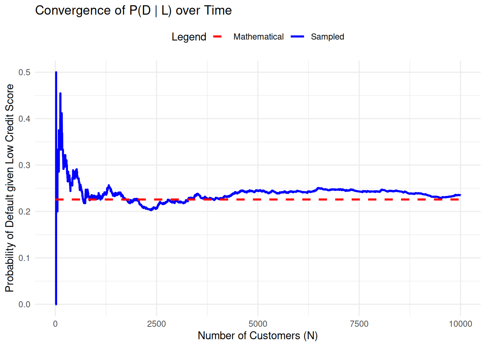

We will first mathematically calculate the probability of Default given a low credit score.
P_D <-0.04P_ND <-0.96P_L_given_D <-0.7P_L_given_ND <-0.1#To calculate P_D_given_L we first need to calculate P_LP_L <- P_L_given_D*P_D + P_L_given_ND*P_ND#To find the P_D_given_L we use the Bayes' ruleP_D_given_L <- (P_L_given_D*P_D)/P_Lcat("Probability of Default given a Low Credit Score is", sprintf("%.2f%%", P_D_given_L *100), "\n")
Probability of Default given a Low Credit Score is 22.58%
Now we will do the same, but simulate the scenario on 10000 customers, given the above probabilities and calculate the Probability of Default given a Low Credit Score. First let us define the known variables.
N <-10000# Defined 10000 customersP_D <-0.04P_ND <-0.96P_L_given_D <-0.7P_L_given_ND <-0.1# Defined the given probabilities
Now we can create the data frame, which will consist of 3 columns. ID, Default(D,ND) given the probabilities above, and Low Credit Score (True, False) also given the probabilities above. Low credit score will be added in a later code chunk, as it will use the Default column.
customers <-data.frame(CustomerId =1:N,Default =sample(c("D","ND"),N,replace =TRUE, prob =c(P_D,P_ND)))head(customers) #Ran the code just to see if the dataframe created is what I wanted
Now we will add the Low Credit Score Column by using the ifelse function and sampling from N given D/ND using the corresponding probabilities.
customers$Low_Credit_Score <-ifelse(customers$Default =="D",sample(c(TRUE,FALSE),N,replace=TRUE,prob =c(P_L_given_D, 1-P_L_given_D)),sample(c(TRUE,FALSE),N,replace =TRUE,prob =c(P_L_given_ND, 1-P_L_given_ND)))head(customers) # Once again, to check what I have created
Finally, let us compute the probability of Default given a Low Credit Score
P_D_given_L_v2<-mean(customers$Low_Credit_Score ==TRUE& customers$Default =="D" )/mean(customers$Low_Credit_Score ==TRUE)cat("Probability of Default given a Low Credit Score is", sprintf("%.2f%%", P_D_given_L_v2 *100), "\n")
Probability of Default given a Low Credit Score is 23.45%
Now to plot this. ChatGPT helped for this part, however, the code and the steps are perfectly clear.
# Compute P_D_given_L_v2 for each value of N (from 1 to 10000)P_D_given_L_v2_over_time <-sapply(1:N, function(n) { customers_sub <- customers[1:n, ]# Ensure no missing values for the probability calculation prob <-mean(customers_sub$Default =="D"& customers_sub$Low_Credit_Score ==TRUE) /mean(customers_sub$Low_Credit_Score ==TRUE)# Return NA for invalid probabilities (e.g., if the denominator is 0)if (is.nan(prob) ||is.infinite(prob)) {return(NA) } else {return(prob) }})# Replace NA values with 0 (or any appropriate value)P_D_given_L_v2_over_time[is.na(P_D_given_L_v2_over_time)] <-0# Prepare data for ggplottime_data <-data.frame(N =1:N,P_D_given_L_v2 = P_D_given_L_v2_over_time,P_D_given_L = P_D_given_L # Theoretical constant value)# Plot using ggplot2library(ggplot2)ggplot(time_data, aes(x = N)) +geom_line(aes(y = P_D_given_L_v2, color ="Sampled"), linewidth =1) +geom_line(aes(y = P_D_given_L, color ="Mathematical"), linetype ="dashed", linewidth =1) +scale_color_manual(values =c("Sampled"="blue", "Mathematical"="red")) +labs(title ="Convergence of P(D | L) over Time",x ="Number of Customers (N)",y ="Probability of Default given Low Credit Score",color ="Legend" ) +theme_minimal() +theme(legend.position ="top")

Comments MS:
Dear Luca, very well done. I have some comments, you might find useful.
Thoroughness and Clarity:
Excellent job on defining the problem clearly and using Bayes’ rule to calculate the probability of default given a low credit score. Your explanation and R code are easy to follow, which demonstrates a solid understanding of both the mathematical and computational aspects.
Code Structure and Readability:
Your use of comments in the R code to explain each step (e.g., calculating \(P_L\) and applying Bayes’ rule) is commendable. This makes it easy for others to understand your approach.
Simulation Approach:
The transition from a theoretical calculation to a simulation of 10,000 customers is a strong point of your submission. By simulating a large sample, you’ve demonstrated the practical application of the theoretical concepts, which is an essential step in bridging theory and practice.
Your decision to build a data frame with detailed columns like customer ID and their default status provides structure and clarity to the simulation. This reflects your understanding of data organization in R.
Consider enhancing the simulation by comparing the observed frequencies of default and non-default in the simulated dataset with the theoretical probabilities. For example, you could calculate the proportion of defaults in the simulation and directly compare it with the Bayes’ rule result to show alignment or discrepancies.
Additionally, you might want to repeat the simulation several times to illustrate how the results fluctuate due to randomness. This could be presented with measures like confidence intervals or standard errors to give a more robust understanding of the outcomes.
Suggestions for Improvement:
Adding a comparison between the theoretical and simulated results is a great opportunity to demonstrate critical thinking. For instance, if the simulated probability slightly deviates from the theoretical one, explain whether this is due to random sampling variability or potential limitations in the simulation process.
Incorporating visualizations could further enhance your submission. For example:
A histogram showing the distribution of defaults and non-defaults in the simulated dataset.
A bar chart comparing the theoretical and simulated probabilities of default.
A time-series or scatterplot (if applicable) to observe trends in defaults across simulated IDs.
Another extension could involve sensitivity analysis: exploring how changes in probabilities like \(P_D\) or \(P_L | D\) affect the results. For example, you could simulate scenarios where \(P_D\) is increased or decreased and observe the impact on \(P_D | L\). This would provide valuable insights into the behavior of the model under different conditions.
Presentation:
The use of formatted output with cat is a nice touch, making your results more readable. You might want to round the percentage to one decimal place for precision and readability, e.g., sprintf("%.1f%%", P_D_given_L * 100).
Extensibility:
You could extend your analysis by exploring scenarios where the probabilities (e.g., \(P_D\), \(P_L | D\), etc.) change. This would show how sensitive the model is to different inputs and provide further insights into the relationship between low credit scores and default probabilities.
Overall, this is an excellent submission that reflects a deep understanding of the problem and a well-thought-out approach to solving it. Keep up the great work!
Comments MS:
Dear Luca, very well done. I have some comments, you might find useful.
catis a nice touch, making your results more readable. You might want to round the percentage to one decimal place for precision and readability, e.g.,sprintf("%.1f%%", P_D_given_L * 100).Overall, this is an excellent submission that reflects a deep understanding of the problem and a well-thought-out approach to solving it. Keep up the great work!